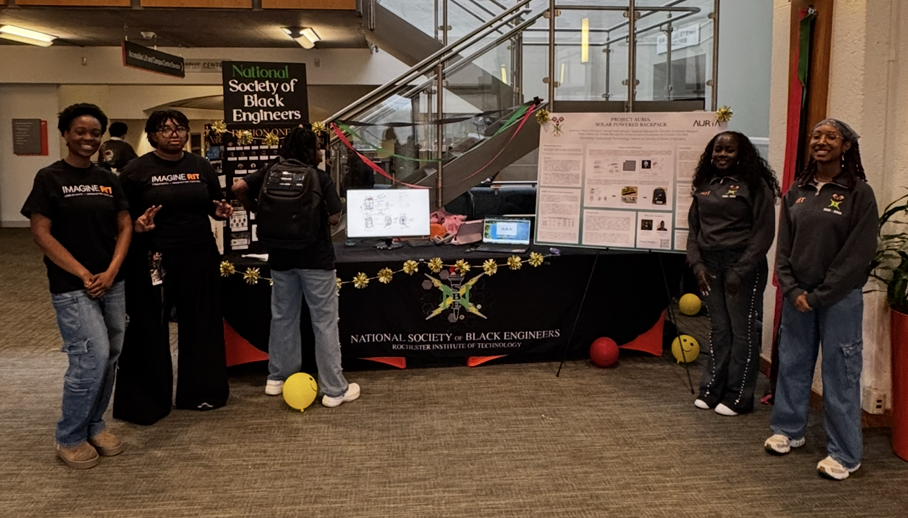
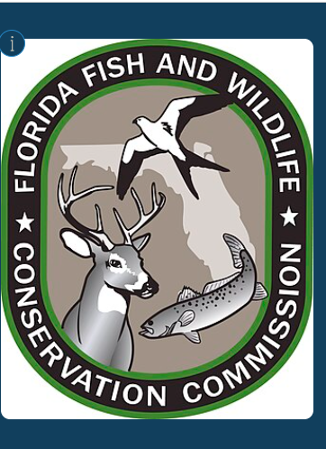
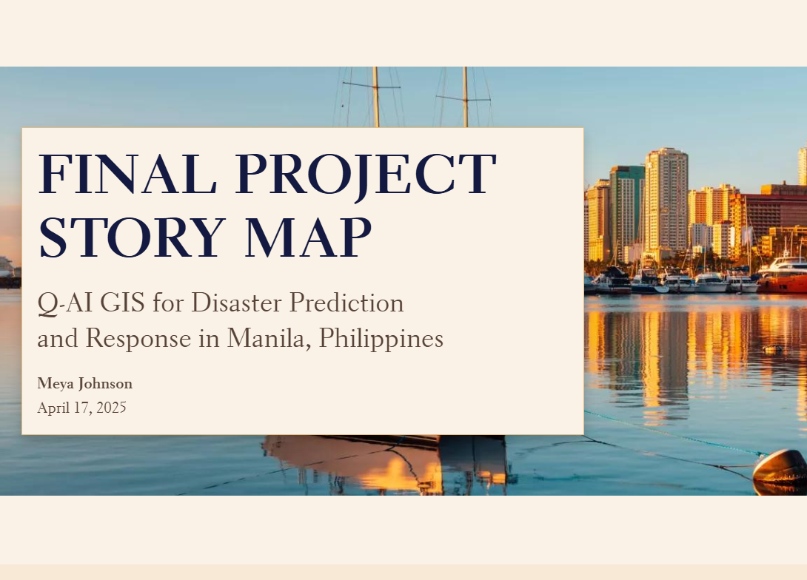
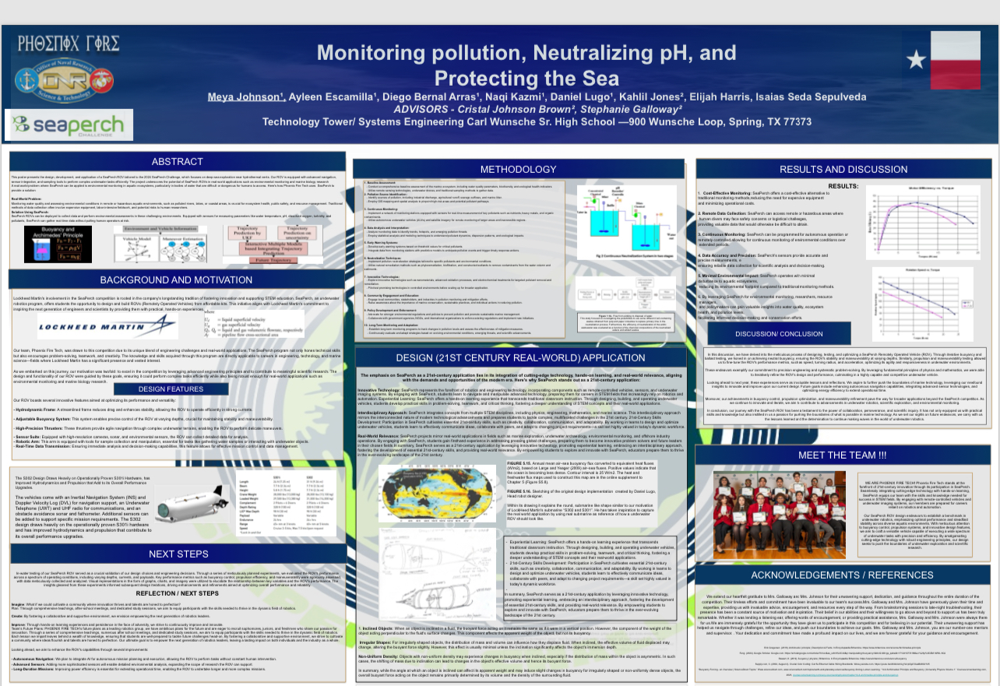
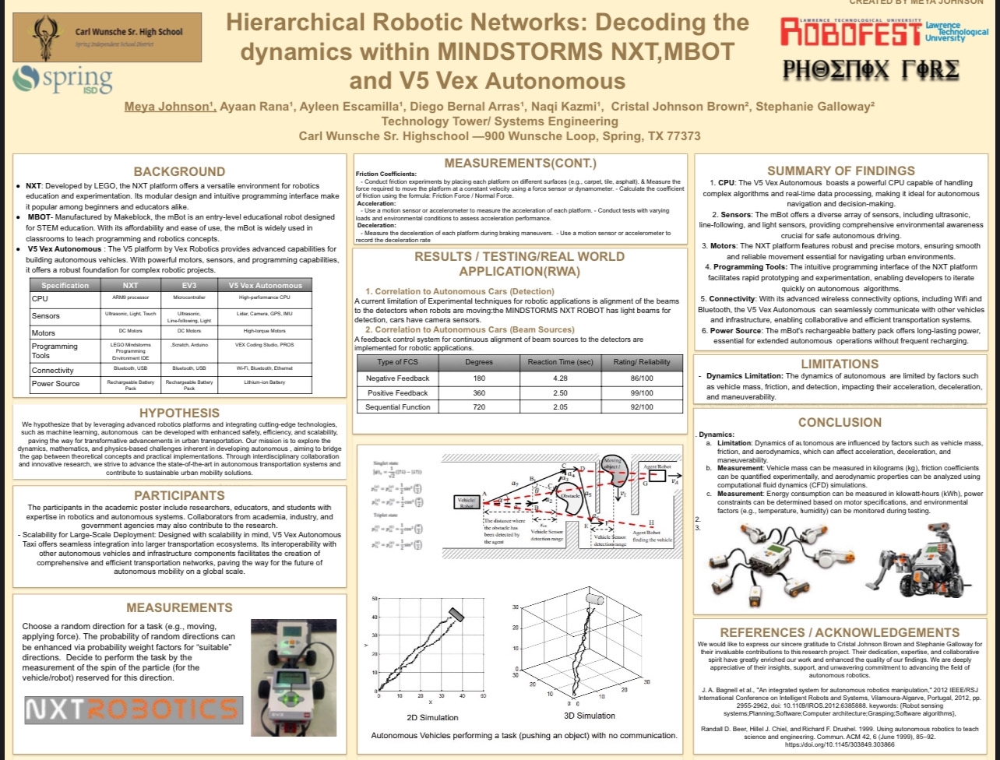

GISSIG Conference · 2026
Senegal Seaports, Hydro Waste Waterways, Water Stress, Plastic Pollution in Relation to Population Density with Water Reservoirs
GIS conference research connecting water systems, stress, waste pathways, plastic pollution, population density, and reservoir conditions in Senegal.

Imagine RIT · 2026
Project Auria
Solar powered backpack research and prototype work presented through Imagine RIT, combining portable charging, student needs, and applied engineering design.

GIS Project · 2025
Manatee Cause of Death Project
GIS mapping project exploring manatee mortality patterns and environmental context through spatial data and interactive map analysis.

GIS Application · Feb 2025-Aug 2025
SSL GIS Disaster Prediction and Response: Manila, Philippines
A GIS and SSL-focused disaster prediction and response project examining spatial risk, response planning, and environmental vulnerability.

Navy Academy Marine Robotics Symposium · 2025
Monitoring Pollution, Neutralizing pH, and Protecting the Sea
Marine robotics project focused on water quality monitoring, pH neutralization, and ocean protection through applied STEM research.

Robofest LTU · 2024
Hierarchical Robotic Networks: Decoding the Dynamics
Robotics research exploring MINDSTORMS NXT, MBOT, and V5 VEX autonomous systems through measurements, simulation, and comparative analysis.
"I want to discourage you from choosing anything or making any decision simply because it is safe. Things of value seldom are." ~ Toni Morrison
Contact maj5657@rit.edu meyaajohnson@gmail.com +1 (346)-530-5852 Rochester, New York Houston, Texas ©